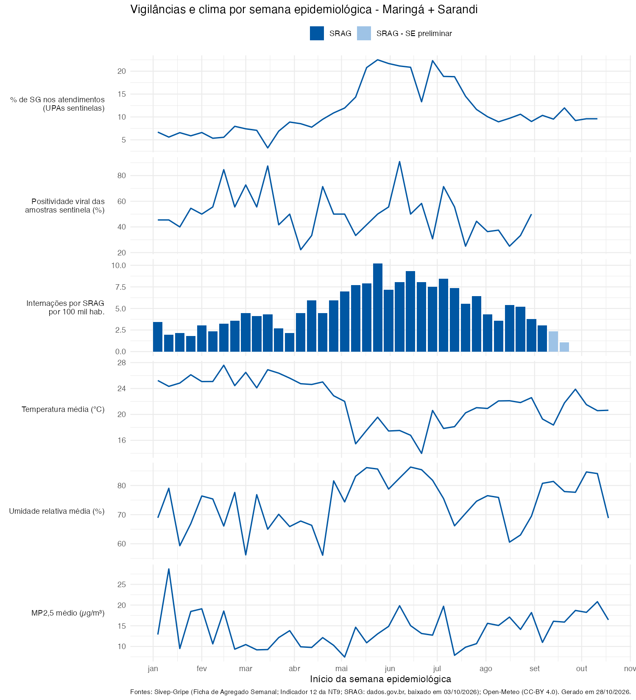

Vigilância Integrada de Vírus Respiratórios — 15ª RS
Este painel coloca lado a lado, por semana epidemiológica (SE), as duas vigilâncias de vírus respiratórios da 15ª Regional de Saúde de Maringá e as condições de clima e qualidade do ar da região.
| Vigilância Sentinela de SG | Vigilância Universal de SRAG | |
|---|---|---|
| Quem entra | Pacientes com Síndrome Gripal atendidos nas 2 UPAs sentinelas (Zona Sul/Maringá e Sarandi) | Todos os pacientes internados por SRAG, residentes na 15ª RS |
| Para que serve | Acompanhar a circulação viral: cada unidade coleta amostras de 5 casos de SG por semana | Medir a gravidade: internações, UTI e óbitos |
| Indicador usado aqui | % de atendimentos por SG no total de atendimentos da unidade; positividade viral das amostras | Internações por SRAG por 100 mil habitantes, por SE de início dos sintomas |
Datas diferentes em cada fonte. As vigilâncias não fecham na mesma semana: a sentinela depende do export do Sivep-Gripe, e o SRAG vem do export manual do SIVEP-Gripe (quando disponível neste computador) ou, senão, do arquivo da API dados.gov.br, que sai com alguns dias de atraso. As últimas 3 SE do SRAG antes da data do download aparecem em azul-claro e ficam fora das correlações, porque ainda vão receber notificações atrasadas.
Linha do tempo
SRAG de residentes dos 30 municípios; clima médio da região, ponderado pela população.
SRAG só de residentes dos 2 municípios onde ficam as UPAs sentinelas — o recorte mais comparável com a sentinela.

Painel gerado em 28/10/2026. SRAG: dados.gov.br, baixado em 03/10/2026. Sentinela: % de SG até a SE 41/2026; positividade viral até a SE 35/2026.